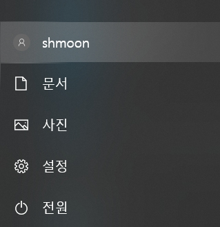

Jekyll 기반의 GitHub Page 생성(1) - 환경설정
Jekyll 기반의 GitHub Page 생성은 여러 절로 구성되어 있습니다.
- Jekyll 기반의 GitHub Page 생성(1) - 환경설정
- Jekyll 기반의 GitHub Page 생성(2) - 블로그 수정 & Publishing
- Jekyll 기반의 GitHub Page 생성(3) - 웹 폰트 설정
- Jekyll 기반의 GitHub Page 생성(4) - rouge를 이용한 syntax highlighting
- Jekyll 기반의 GitHub Page 생성(5) - lunr.js를 이용한 Search 기능 추가
- Jekyll 기반의 GitHub Page 생성(6) - Google Search Console 활용
- Jekyll 기반의 GitHub Page 생성(7) - GitHub Gist 활용
- Jekyll 기반의 GitHub Page 생성(8) - Travis CI 활용(public Repository)
- Jekyll 기반의 GitHub Page 생성(9) - Jekyll site regeneration 속도 향상시키기
영상설명
이번 영상은 Jekyll을 이용해 자신의 local 컴퓨터에 기본적인 블로그를 생성하는 방법에 대한 영상입니다.
블로그를 생성하기 위한 Ruby 설치와 Jasper2 blog template 설치 및 실행하는 방법에 대해서 알아보겠습니다. Windows 10 환경으로 진행합니다.
Jekyll 기반의 GitHub Page 생성(1) - 환경설정 영상
환경설정
Jekyll을 이용해 GitHub Page에 기본적인 블로그를 생성하는 방법을 제가 사용하는
Jasper2 theme를 이용하여
생성하고 설정하는 방법에 대해서 알아보겠습니다. (Windows 10환경으로 진행합니다.)
GitHub Page에서 Jekyll로 기본적 형태의 블로그를 개설하는 건 별로 어렵지
않게 할 수 있습니다. 하지만 맘에 드는 테마를 수정해서 사용하려면 약간의 Front End 개발 지식이 필요합니다.
제 블로그에서 사용하는 테마는 Jekyll Themes 에서 검색해 찾은
Jasper2라는 Theme입니다.
Ghost라는 유명한 publishing platform의 Jekyll 버전인데 맘에 들어서 이것 저것 수정해서 사용하고 있습니다.
(참고로 Jasper2는 MIT License 입니다.)
초기 세팅부터 Travis-CI를 이용한 Build와 배포 자동화까지 천천히 설명해보도록 하죠.
Windows 환경은 조금 까다롭습니다.
Ruby때문에 그렇습니다. 먼저 컴퓨터의 계정 ID가 한글로 되어 있으면 여러 문제가 발생합니다. 한글계정이라면 먼저 계정부터 영문으로 바꾸고 시작해야 합니다. 아래의 그림처럼 컴퓨터의 계정이 영문으로 되어있는지 확인합니다.

제일 먼저 해야하는 작업은 Ruby를 설치하는 것입니다.
Ruby는 RubyInstaller for Windows 에서
받으시면 됩니다.
사용할 버전은 2.6.6입니다. 다른 버전 사용할 경우 문제가 발생할 여지가 있습니다.
다운로드 받은 Ruby를 설치합니다.
이제 bundler를 설치합니다. bundler는 Ruby application 개발을 위한 일관된 환경을 제공합니다. 단편적 기능 중 하나는
Ruby application이 사용하는 gem의 dependency를 관리하는 것입니다. 우리는 나중에 이 bundler를 이용하여 Jekyll을
사용할 것이기 때문에 설치해야 합니다.
gem install bundler
기본적인 준비과정은 끝났습니다.
그 다음 과정은 우리가 사용할 Theme인 Jasper2를 다운받아서 원하는 폴더에
압축을 풀어줍니다. C:/blogmaker에 다음과 같은 형태로 압축을 풀어 저장했습니다.
여기서 주의해야 할 점은 폴더 이름에 공백이 포함되어 있으면 나중에 css빌드할 때 문제가 발생합니다. 즉,
C:/blogmaker처럼 폴더는 소문자로 공백없이 생성합니다.
command 창을 열어서 해당 폴더(C:/blogmaker)에서 실행해 필요한 gem을 설치합니다.
다음과 같이 실행합니다.
bundle install
이제 다시 아래와 같은 명령을 이용하여 실행시킵니다.
bundle exec jekyll serve
만약 호스트 IP와 Port를 변경해서 실행시킬려면 아래와 같이 실행시킵니다.
bundle exec jekyll serve --host HostIP --port PortNumber
Jekyll은 template처리를 위해 Liquid template을 사용합니다. template 처리를 거쳐 결과 파일이
특정 폴더에 저장되고 로컬 웹 서버가 실행되어서 서비스해 주기 때문에 로컬에서 블로그를 확인해 볼 수 있습니다.
build 과정을 거쳐 로컬 웹서버를 이용하여 웹 서비스까지 실행시켜주는 명령이라고 생각하시면 됩니다.
아래와 같은 메시지가 출력되면서 로컬 웹 서버가 4000번 포트로 기동되고
http://localhost:4000/jasper2로 접속하면 테마페이지를 보실 수 있습니다.
일단 로컬에서 화면을 띄웠습니다. 이제 각 메뉴를 원하는 내용으로 바꾸고 이미지를 내 입맛에 맞게 수정하고 기타 등등의 기능들을 추가하면 될 듯 보입니다.
End.